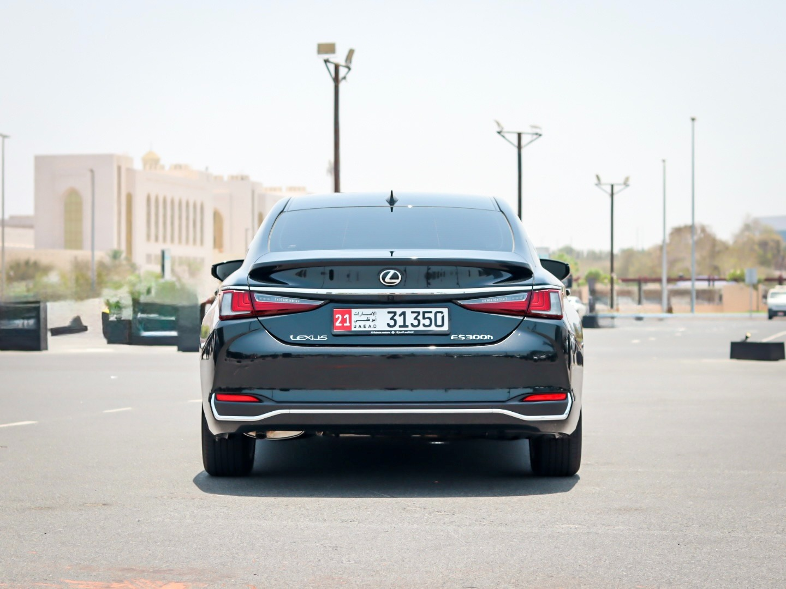

City Tours
from Al Jazira.
Sightseeing tours of Abu Dhabi arranged by a local team based on Al Jazira Muroor Rd.

See more, stress less
Experienced drivers and comfortable vehicles for every kind of tour.
- 24/7
- Operations
- GPS
- Reporting
- UAE
- Coverage
Quick answer: VHS Passengers Transport arranges city tours from Al Jazira, Abu Dhabi, with half-day, full-day and custom sightseeing routes, comfortable air-conditioned vehicles and experienced drivers. Our office is at LLJ Business Center on Al Jazira Muroor Rd. To plan a tour, call +971 2 440 3060 or email info@vhstransport.com with your group size, dates and the places you want to visit.
Last updated:
Your Al Jazira tour planners.
VHS Passengers Transport is based at LLJ Business Center on Al Jazira Muroor Rd, Abu Dhabi, and arranges city tours with comfortable vehicles, experienced drivers and flexible routes.
Our office is in Al Jazira, so planning a sightseeing tour with a local team is easy. We arrange half-day, full-day and custom city tour routes in Abu Dhabi for families, companies, hotels and delegations.
Tell us your group size, dates and the places you want to see, and we will plan the rest. For tours across the whole city, see our city tours in Abu Dhabi and city tours in the UAE. Hosting visitors? Explore our guest transportation and airport transfer services.
Al Jazira
tours.
A local team, comfortable vehicles and flexible plans.
Local to
Al Jazira
Our office is on Al Jazira Muroor Rd, so your tour is planned by a team close by.
Comfortable
Vehicles
Air-conditioned cars, vans and buses to match your group size.
Experienced
Drivers
Courteous drivers who know the city and keep your day on schedule.
Popular stops on an Abu Dhabi city tour.
In short: a city tour of Abu Dhabi commonly includes Sheikh Zayed Grand Mosque, Louvre Abu Dhabi on Saadiyat Island, Qasr Al Watan, the Corniche and Yas Island. VHS plans the route and timings around your group’s interests, and you can mix stops freely.
Sheikh Zayed Grand Mosque
One of Abu Dhabi’s best-known landmarks. Visitors are expected to dress modestly, and our team can advise before the day.
Louvre Abu Dhabi
The art and civilisations museum on Saadiyat Island, a popular half-day stop.
Qasr Al Watan
The presidential palace open to visitors, known for its architecture and gardens.
Corniche and Yas Island
The waterfront promenade for a relaxed stop, and Yas Island for family attractions and entertainment.
Half-day, full-day or custom.
In short: a half-day tour covers a morning or an afternoon, a full-day tour covers the whole day with more stops, and a custom tour follows your own list and timings. All three can start from Al Jazira or from your hotel, office or residence.
| Half-day | Full-day | Custom | |
|---|---|---|---|
| Best for | First-time visitors and shorter schedules | Guests who want to see more of the city | Groups with specific interests or timings |
| Typical stops | A few key landmarks, such as the Grand Mosque and the Corniche | More stops across the city, islands and attractions | Your own list, in your own order |
| Vehicle | Car, van or bus chosen to match the group size | ||
| Price | Depends on route, vehicle and duration. Confirmed before you book. | ||
What to share when planning.
In short: send your group size, tour date, pick-up point and the places you want to visit. With these details our team can recommend the route, vehicle and timings and confirm the price.
- Group: number of adults and children, and any accessibility needs.
- Date and time: preferred start time and whether you want a half-day or full-day tour.
- Pick-up: your hotel, office or residence in Al Jazira or elsewhere in Abu Dhabi.
- Places: must-see stops and anything you want to skip.
- Contact: a phone number for your group leader or coordinator.
Tours from Al Jazira.
We plan tours for groups in Al Jazira and across Abu Dhabi, with pick-ups from hotels, offices and residences.
- Al Jazira
- Al Jazira Muroor Rd
- Hotels
- Offices & business centres
- Residences
Related pages
Al Jazira city tours, answered.
Can I arrange a city tour from Al Jazira, Abu Dhabi?
Yes. VHS Passengers Transport is based on Al Jazira Muroor Rd and plans sightseeing tours for groups in Al Jazira and across Abu Dhabi.
Where is the VHS Transport office?
LLJ Business Center, Office #113 and #114, Al Jazira Muroor Rd, Abu Dhabi, UAE.
Do you offer half-day and full-day tours?
Yes. We arrange half-day, full-day or custom routes, planned around your group and your interests.
How do I plan a city tour?
Call +971 2 440 3060, message us on WhatsApp or email info@vhstransport.com with your group size, dates and the places you want to visit. Our team will plan the route, vehicle and timings.
What vehicles are used for the tours?
We use air-conditioned cars, vans and buses, chosen to match your group size.
Are the drivers experienced?
Yes. Our drivers are courteous, know the city and keep your day on schedule.
What is included in the tour price?
Inclusions depend on the route, vehicle and duration. Our team confirms exactly what is covered before you confirm the booking.
What places can a city tour of Abu Dhabi include?
Popular stops include Sheikh Zayed Grand Mosque, Louvre Abu Dhabi on Saadiyat Island, Qasr Al Watan, the Corniche and Yas Island. We plan the route around your group’s interests and time.
Can you pick up my group from a hotel or office in Al Jazira?
Yes. We arrange pick-ups from hotels, offices and residences in Al Jazira and across Abu Dhabi, and drop-offs after the tour.
Can I visit Sheikh Zayed Grand Mosque on a city tour?
Yes, it can be included in your route. Visitors are expected to dress modestly, and our team can advise you before the day.
How long is a half-day tour compared with a full-day tour?
A half-day tour covers a morning or an afternoon, and a full-day tour covers the whole day with more stops. Exact timings are agreed with our team based on your route.
Do you arrange tours for families, companies and delegations?
Yes. We plan tours for families, companies, hotels and delegations, with vehicles chosen to match the group size.
Can you arrange a tour beyond Abu Dhabi?
Our base is in Al Jazira, Abu Dhabi. For destinations beyond Abu Dhabi, send us the route and date and our team will confirm availability and price.
Make every trip memorable.
We want visitors to enjoy the UAE comfortably, with nothing to worry about between one stop and the next.
Personal, flexible service.
A disciplined transportation partner that adapts to your plans, with punctual drivers and clean, well-kept vehicles.
Plan your tour.
Tell us your group size, dates and the places you want to visit, and our team will put together the right plan.
Send an enquiry ↗